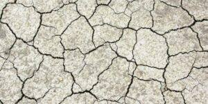

Sécheresse : alerte renforcée

En raison des fortes chaleurs et du manque de précipitations, la situation hydrologique continue de se dégrader dans le Bas-Rhin. La nappe « Lauter, Sauer, Moder et Zorn », dont dépend Hœnheim, est désormais placée en alerte sécheresse renforcée par la Préfecture. Cette situation d’alerte fait l’objet de mesures de limitation ou de suspension des […]
Canicule : la Ville de Hoenheim se mobilise pour les personnes vulnérables

Face aux fortes chaleurs et dès le passage en Vigilance Orange Canicule, la Ville de Hoenheim met en place un dispositif d’accueil pour accompagner les personnes les plus fragiles. Durant les épisodes de canicule, les personnes vulnérables pourront être accueillies dans les espaces climatisés de l’EHPAD Les Colombes, établissement géré conjointement par les Villes de […]
Installation du conseil municipal le 22 mars 2026
L’installation du nouveau Conseil municipal, entièrement renouvelé dès le premier tour des élections municipales et communautaires du 15 mars 2026, a eu lieu dimanche 22 mars 2026 à 11h en salle du conseil municipal à Hoenheim. Cette séance s’est déroulée en présence de nombreux habitants. À cette occasion, Vincent Debes a été élu Maire […]
Garderie des vacances – changement de lieu

ATTENTION ! CHANGEMENT DE LIEU POUR LA GARDERIE DES VACANCES À PARTIR D’AVRIL 2026 ET PENDANT LES TRAVAUX A L’ECOLE MATERNELLE RIED : NOUVEAU LIEU DE LA GARDERIE DES VACANCES POUR LES 3-6 ANS A compter du lundi 13 avril 2026, la garderie des vacances se déroulera au Périscolaire de l’école du Centre – 3 rue […]
Frelon asiatique : agir dès maintenant !

Le frelon asiatique (Vespa velutina), reconnaissable à ses pattes jaunes, est aujourd’hui bien implanté sur notre territoire. Sa présence a un impact important sur la biodiversité, notamment sur les abeilles, et peut aussi causer des dégâts dans les jardins, vergers et espaces verts. 👉 La lutte commence au printemps (en février dès +12°C) par le […]